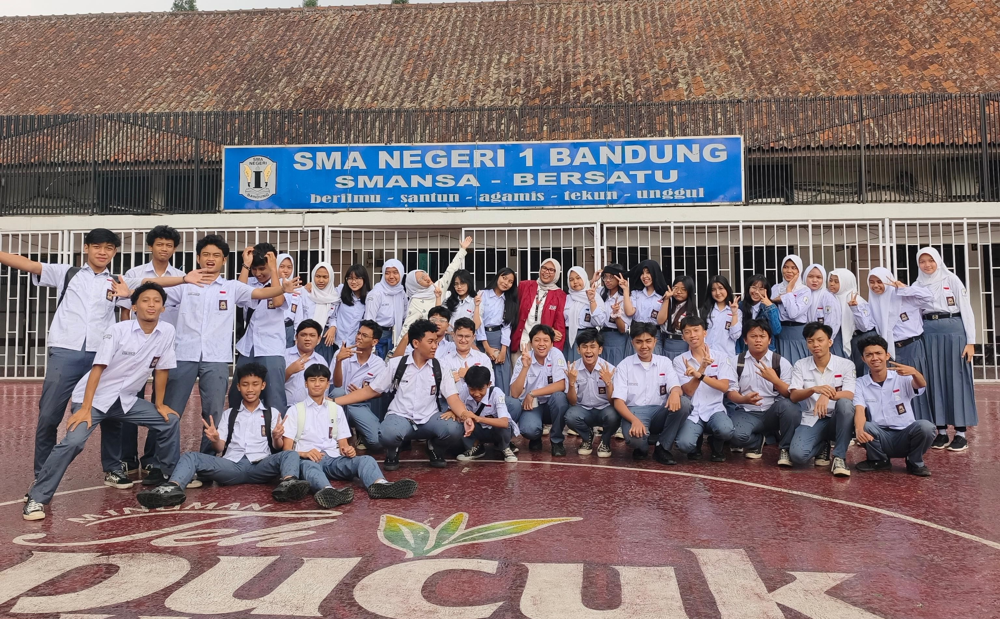
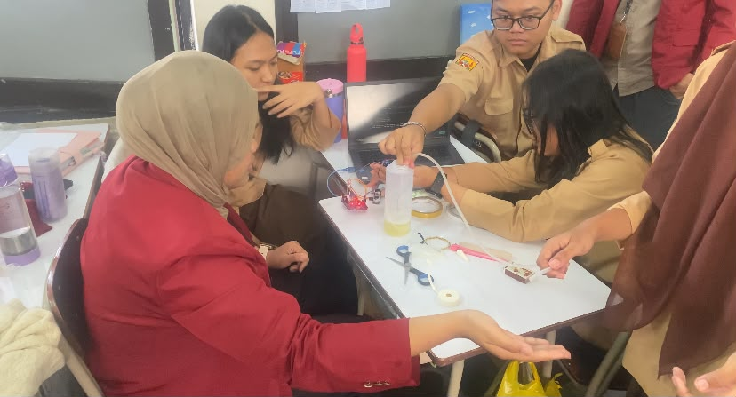
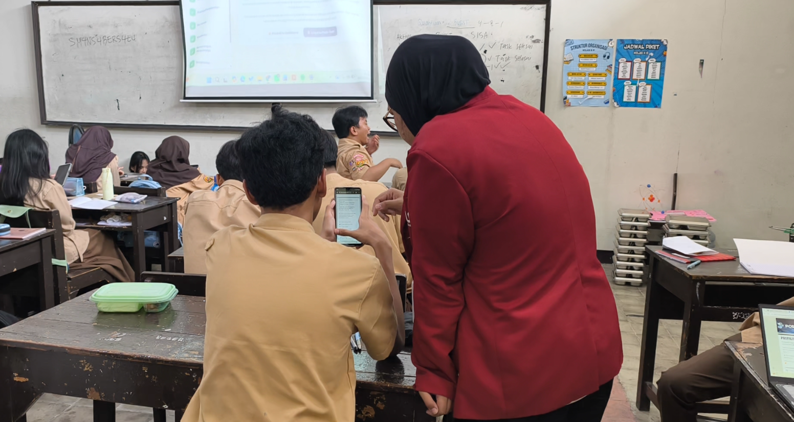
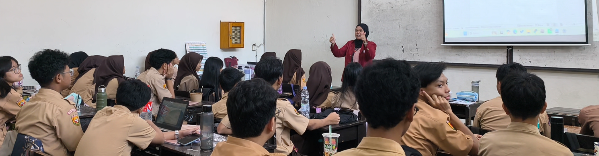

05 — Penutup Perjalanan Belajar
Refleksi Pengalaman Selama PPG
Lembar Kerja 3 (LK 3): pandangan saya tentang pendidikan Indonesia, upaya menjadi guru profesional, dan rencana tindak lanjut setelah mengikuti PPG.
Pandangan
Pandangan tentang Pendidikan di Indonesia
Menjalani PPG membuat saya semakin yakin bahwa pendidikan Indonesia membutuhkan pemerataan bukan hanya pada akses dan fasilitas, tetapi juga pada kualitas pembelajaran yang diterima setiap peserta didik — selaras dengan visi Kemendikdasmen tentang pendidikan bermutu untuk semua. Kualitas itu sangat bergantung pada kesiapan guru di depan kelas.
- Pendidikan dimulai dari mengenali peserta didik. Pengalaman PPL memperlihatkan bahwa kemampuan peserta didik sangat beragam dan bisa muncul berbeda pada materi yang berbeda, sehingga guru perlu bersedia mengenali peserta didiknya, bukan hanya menuntaskan materi sesuai rencana.
- Belajar karena menyadari kebutuhan, bukan sekadar kewajiban. Saya percaya pendidikan ke depan perlu membuat murid datang ke sekolah karena merasa apa yang dipelajari penting dan dibutuhkan.
- Guru yang berkompeten, sadar, dan mau memperbaiki diri. Pendidikan Indonesia perlu didukung guru-guru yang punya kompetensi, kesadaran, dan kemauan terus belajar — termasuk menjaga sikap dan kepribadian, karena peserta didik belajar juga dari cara guru bersikap.

Praktik Mengajar Siklus 1

Pendampingan Murid
Upaya
Upaya Menjadi Guru Profesional
Upaya ini saya susun mengikuti empat kompetensi guru, sejalan dengan visi dan langkah konkret pada Identifikasi Diri.
Mempersiapkan dan Merefleksikan Pembelajaran
- Mempersiapkan pembelajaran secara matang dan menyesuaikan tempo serta bahasa penyampaian.
- Melakukan refleksi setelah setiap sesi mengajar.
- Memetakan kemampuan awal peserta didik sebelum menentukan strategi, lalu memberi bantuan bertahap agar berkembang menuju kemandirian, bukan bergantung pada guru.
Menjaga Sikap dan Memperbaiki Diri
- Menjaga sikap dan kepribadian, karena peserta didik belajar bukan hanya dari materi, tetapi juga dari cara guru bersikap.
- Menerima kekurangan, seperti penggunaan bahasa yang perlu dirapikan, sebagai bagian dari proses memperbaiki diri.
Terbuka terhadap Masukan
- Terbuka menerima masukan dari dosen, guru pamong, dan rekan sejawat sebagai bahan perbaikan.
- Membangun hubungan yang nyaman dengan peserta didik tanpa melewati batas profesional.
Terus Belajar sebagai Guru Informatika
- Memperbarui pengetahuan Informatika dan teknologi pembelajaran.
- Menjadi guru profesional berarti tidak merasa sudah cukup: mau belajar, menerima masukan, dan memperbaiki kualitas pembelajaran.
Bukti Pelaksanaan
Dokumentasi

Kelas X-9 Aktif dan Hebat

Kelas 12 - Uji Arduino

Pendampingan Asesmen

Aktivitas Pembelajaran